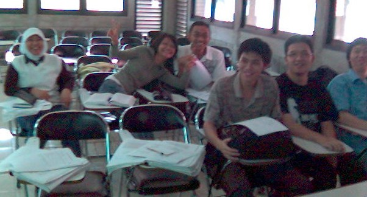
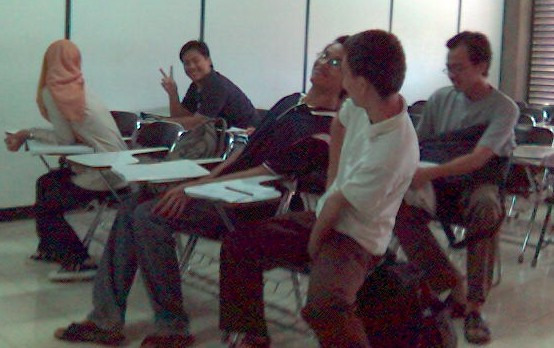

IKI-20230/80230: Sistem Operasi
Rahmat M. Samik-Ibrahim
September - Desember 2006
Jadual Kuliah, Ujian, dan Bobot Penilaian
Bagian "Jadual dan Bobot" ini sengaja ditampilkan paling awal, sebab
merupakan hal yang paling sering ditanyakan!
- Kuliah
Senin: Ruang 2303 Gedung B.
- 08.00-08.10: Prabahasan Sub-Topik I
- 08.10-08.10: nano-JEDA
- 08.10-08.50: Presentasi Sub-Topik I.
- 08.50-09.00: JEDA
- 09.00-09.10: Prabahasan Sub-Topik II
- 09.10-09.50: Presentasi Sub-Topik II.
Senin: Ruang 2303 Gedung B.
- 16.00-17.00: Latihan Soal.
Jumat: Ruang 2303 Gedung B.
- 10.00-10.10: Prabahasan Sub-Topik I/II
- 10.10-10.10: nano-JEDA
- 10.10-10.50: Presentasi Sub-Topik I.
- 10.50-10.50: nano-JEDA
- 10.50-11.30: Prabahasan Sub-Topik II
- Ujian Pertama
- Bobot: 28%.
- Jenis Soal: Untuk mengevaluasi kemampuan kognitif hingga
tingkatan analisa.
- Jumlah Soal: 4 (empat) @ 30 menit.
- Contoh Soal: Lihat rujukan.
- Jadual: Senin, 6 November 2006 (08:00 - selesai).
- Ujian Kedua
- Bobot: 35%.
- Jenis Soal: Untuk mengevaluasi kemampuan kognitif hingga
tingkatan analisa.
- Jumlah Soal: 5 (lima) @ 30 menit.
- Contoh Soal: Lihat rujukan.
- Jadual: 20 Desember 2006 (10:00 - selesai).
- Partisipasi, Moderasi, dan Tugas
- Bobot: 37%.
- Bonus: hingga 10%
- Para peserta diharap berpartisipasi secara aktif dalam kelas,
serta telah mempelajari bahan ajar sebelum tatap muka.
Latihan soal dianggap akan dikerjakan secara proaktif.
Lihat juga
deskripsi tugas dan latihan soal pada
apendiks B rujukan utama.
- Nilai Akhir
| Nilai | HURUF
|
|---|
| > 91 | A
|
| 83 - 91 | A-
|
| 76 - 83 | B+
|
| 70 - 76 | B
|
| 65 - 70 | B-
|
| 60 - 65 | C+
|
| 51 - 60 | C
|
| 40 - 51 | D
|
| < 40 | E
|
- Administratif
Harap untuk tidak mengajukan kepada
pengajar:
ujian susulan, tugas tambahan, atau
segala jenis permintaan perbaikan nilai dan masalah
administratip lainnya (sakit, pindah kelas, dst.).
Silakan menghubungi Fakultas (bagian akademik) untuk mengurus
dan merundingkan hal tersebut.
Pengajar/Presidium Ketua Kelas/Interaksi
Penjelasan Umum
- Kode/Nama Mata Ajar: IKI-20230/80230 Sistem Operasi.
- Satuan Kredit Semester: 4 (empat) SKS Kuliah Tatap Muka,
yang dijabarkan menjadi:
- 48
sub-pokok-bahasan.
- mengulas dua bab bahan ajar (kolompok).
- dua kali presentasi berikut persiapannya (kelompok).
- Para peserta kuliah, diharapkan menguasai bahasa pemrograman
Java, serta pernah atau sedang mengambil mata kuliah
setara:
- IKI-10100: Struktur Data dan Algoritma.
- IKI-20210: Pengantar Organisasi Komputer.
Sasaran Pembelajaran
- IKI-20230/ 80230 merupakan mata ajaran tingkat dua.
Sasaran pembelajaran terminal-nya ialah agar peserta
memiliki landasan kuat untuk menghadapi mata ajaran pada
tingkatan-tingkatan berikutnya.
- Sasaran Pembelajaran Penunjang, agar peserta mata ajaran:
- memahami bahwa sistem operasi merupakan bagian yang penting
dari sebuah sistem komputer.
- memahami bahwa mata ajar sistem operasi merupakan komponen
inti dari kurikulum bidang ilmu komputer.
- memahami serta sensitif terhadap konsep-konsep dasar dari
sebuah sistem operasi modern, seperti struktur komputer modern,
manajemen proses, memori, sistim berkas dan sistem M/K,
tanpa harus melakukan pembuktian teori secara formal.
- memahami beberapa konsep sistem operasi dengan pemrograman
bahasa JavaTM.
- memiliki pengalaman dalam menggali sebuah topik sempit/khusus
bidang sistem operasi, serta dapat menerangkan topik tersebut
dalam sebuah tulisan lengkap.
- mengkaitkan konsep-konsep sebuah sistem operasi dengan
sebuah sistem operasi yang nyata.
Rujukan
Metoda
Metoda pembelajaran diupayakan sedekat mungkin dengan prinsip
yang berpusat pada peserta ajar. Setiap pertemuan akan
didahului/dimulai dengan dengan diskusi dan tanya-jawab.
Diskusi akan dipimpin secara bergantian oleh masing-masing peserta.
Mengingat ini merupakan kuliah tingkat dasar, kognitif hanya sampai
tingkatan analisa.
Rencana Pembahasan
-
Senin, 4 September 2006
- Pendahuluan
- Bab 1: Hari Gini Belajar SO?
- (sore) Kosong.
-
Jumat, 8 September 2006
- Bab 2: HaKI Perangkat Lunak.
- Latihan
-
Senin, 11 September 2006
- Bab 3: Perangkat Keras Komputer.
- Bab 4: Proteksi Perangkat Keras.
– Akhir Bagian I –
- (sore) Kosong.
-
Jumat, 15 September 2006
- Bab 5: Komponen Sistem Operasi.
- Bab 6: Sudut Pandang Alternatif.
-
Senin, 18 September 2006
- Bab 7: Struktur Sistem Operasi.
- Bab 8: Mesin Virtual Java.
- (sore) Latihan.
-
Jumat, 22 September 2006
- Bab 9: Sistem GNU/Linux.
– Akhir Bagian II –
- Bab 10: Konsep Proses.
-
Senin, 25 September 2006
- Bab 11: Konsep Thread.
- Bab 12: Thread Java.
- (sore) Latihan.
-
Jumat, 29 September 2006
- Bab 13: Konsep Penjadwalan.
- Bab 14: Penjadual CPU.
-
Senin, 2 Oktober 2006
- Bab 15: Algoritma Penjadwalan I.
- Bab 16: Algoritma Penjadwalan II.
- (sore) Latihan.
-
Jumat, 6 Oktober 2006
- Bab 17: Manajemen Proses Linux.
– Akhir Bagian III –
- Bab 18: Konsep Interaksi.
-
Senin, 9 Oktober 2006
- Bab 19: Sinkronisasi.
- Bab 20: Masalah Critical Section.
- (sore) Latihan.
-
Jumat, 13 Oktober 2006
- Bab 21: Perangkat Sinkronisasi I.
- Bab 22: Perangkat Sinkronisasi II.
-
Senin, 16 Oktober 2006
- Bab 23: Deadlock.
- Bab 24: Diagram Graf.
- (sore) Latihan.
-
Jumat, 20 Oktober 2006
- Bab 25: Bounded Buffer.
- Bab 26: Readers/Writers.
-
Senin, 30 Oktober 2006
- Bab 27: Sinkronisasi Dua Arah
– Akhir Bagian IV –
- Bab 28: Manajemen Memori.
- (sore) Latihan.
-
Jumat, 3 November 2006
-
Senin, 6 November 2006
-
Jumat, 10 November 2006
-
Senin, 13 November 2006
- Bab 29: Alokasi Memori.
- Bab 30: Pemberian Halaman.
- (sore) Kosong.
-
Jumat, 17 November 2006
- Bab 31: Segmentasi.
- Bab 32: Memori Virtual.
-
Senin, 20 November 2006
- Bab 33: Permintaan Halaman Pembuatan Proses.
- Bab 34: Algoritma Pergantian Halaman.
- (sore) Latihan.
-
Jumat, 24 November 2006
- Bab 35: Strategi Alokasi Frame.
- Bab 36: Memori Linux.
– Akhir Bagian V –
-
Senin, 27 November 2006
- Bab 37: Sistem Berkas.
- Bab 38: Struktur Direktori.
- (sore) Latihan.
-
Jumat, 1 Desember 2006
- Bab 39: Aspek Jaringan dan Keamaman.
- Bab 40: Implementasi Sistem Berkas.
-
Senin, 4 Desember 2006
- Bab 41: FHS.
- Bab 42: Alokasi Blok Sistem Berkas.
– Akhir Bagian VI –
- (sore) Latihan.
-
Jumat, 8 Desember 2006
- Bab 43: Perangkat Keras M/K.
- Bab 44: Subsistem M/K Kernel.
-
Senin, 11 Desember 2006
- Bab 45: Manajemen Disk I.
- Bab 46: Manajemen Disk II.
- (sore) Latihan.
-
Jumat, 15 Desember 2006
- Bab 47: Perangkat Penyimpanan Tersier.
- Bab 48: Masukan/Keluaran Linux.
– Akhir Bahan Ajaran –
-
Rabu, 20 Desember 2006 (09:30 - 12:00).
Tugas akan dijelaskan dalam lembaran
terpisah.
Tata Tertib
Sejalan dengan aturan-aturan Fakultas, diantaranya Keputusan Dekan
Fakultas Ilmu Komputer Universitas Indonesia no.
1007/SK/PT02.H4.FASILKOM/PP/1/1998
tentang
Tata Tertib Peserta
Ujian Tengah Semester dan Ujian Akhir Semester,
ketentuan mengikuti kuliah IKI-20230/80230 ini sebagai berikut:
- Setiap peserta harus membaca dan memahami edaran ini, dengan
menanda-tangani potongan lembaran di bawah ini.
Tidak menanda-tangani ketentuan ini akan berakibat berkas ujian
tidak akan diperiksa.
- Setiap peserta harus hadir tepat waktu sesuai jadual yang telah
ditetapkan.
- Peserta yang terlambat atau keluar/masuk kelas hanya dapat
masuk ke kelas pada saat JEDA.
- Lupa mematikan peralatan elektronik (umpama Ponsel) dapat
berakibat serius pada nilai partisipasi peserta.
- Ketentuan khusus ujian:
- Sangat dianjurkan untuk tidak kebelakang (membuang air)
pada saat kuliah/ujian berlangsung.
- Harap menandatangani daftar hadir, serta
memperlihatkan kartu pengenal berfoto seperti KTM, SIM,
atau KTP.
- Membawa alat tulis-menulis secukupnya, serta satu lembar
lembar memo ukuran A4 (timbal balik),
- TIDAK DIPERKENANKAN MEMBAWA:
kertas tambahan, tempat pinsil, tas, jaket, serta tidak
membawa peralatan elektronis seperti kalkulator, palm, komputer,
telepon genggam, pager, dan lain sebagainya.
- Mengundurkan diri dengan alasan "tidak sehat" hanya dapat dilakukan
sebelum ujian dimulai.
- Pelanggaran ringan dapat berakibat pemotongan nilai ujian
hingga 30%.
- Pelanggaran terhadap ketentuan tata tertib ujian lainnya
akan dilaporkan kepada Wakil Dekan I.
POTONG DI SINI
Pernyataan
Yang bertanda-tangan di bawah ini,
telah membaca dan memahami ketentuan mata kuliah IKI-20230/80230 ini
(Tanggal/Nama/NPM/Tanda-tangan):

